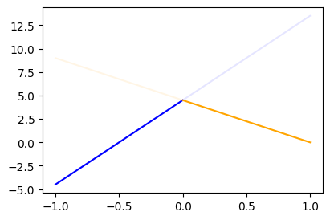
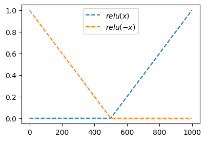
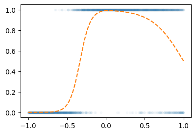
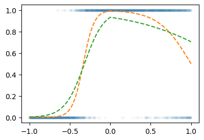
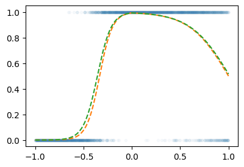

import torch
import matplotlib.pyplot as plt
import pandas as pd04wk-1: (신경망) – 로지스틱의 한계 극복

1. 강의영상
2. Imports
plt.rcParams['figure.figsize'] = (4.5, 3.0)3. 꺽인직선을 만드는 방법
지난시간복습
# 오늘의 잔소리..
## 회귀(카페예제): yhat=직선=linr(x), 정규분포, MSEloss
## 로지스틱(스펙과취업): yhat=곡선=sig(직선)=sig(linr(x)), 베르누이, BCELoss
## 이름없음(스펙의역설): yhat=꺽인곡선=sig(꺽인직선)=sig(??), 베르누이, BCELOss- 로지스틱의 한계를 극복하기 위해서는 시그모이드를 취하기 전에 꺽인 그래프 모양을 만드는 기술이 있어야겠음.
- 아래와 같은 벡터 \({\bf x}\)를 가정하자.
x = torch.linspace(-1,1,1001).reshape(-1,1)
xtensor([[-1.0000],
[-0.9980],
[-0.9960],
...,
[ 0.9960],
[ 0.9980],
[ 1.0000]])- 목표: 아래와 같은 벡터 \({\bf y}\)를 만들어보자.
\[{\bf y} = [y_1,y_2,\dots,y_{n}]^\top, \quad y_i = \begin{cases} 9x_i +4.5& x_i <0 \\ -4.5x_i + 4.5& x_i >0 \end{cases}\]
Caution
일반적으로 제 강의노트에서
- 독립변수 = 설명변수 = \({\bf x}\), \({\bf X}\)
- 종속변수 = 반응변수 = \({\bf y}\)
를 의미하는데요, 여기에서 \(({\bf x},{\bf y})\) 는 (독립변수,종속변수) 혹은 (설명변수,반응변수) 를 의미하는게 아닙니다.
# 방법1 – 수식 그대로 구현
plt.plot(x,9*x+4.5,color="blue",alpha=0.1)
plt.plot(x[x<0], (9*x+4.5)[x<0],color="blue")
plt.plot(x,-4.5*x+4.5,color="orange",alpha=0.1)
plt.plot(x[x>0], (-4.5*x+4.5)[x>0],color="orange")
y = x*0
y[x<0] = (9*x+4.5)[x<0]
y[x>0] = (-4.5*x+4.5)[x>0]
plt.plot(x,y)
#
# 방법2 – 렐루이용
relu = torch.nn.ReLU()
#plt.plot(x,-4.5*relu(x),color="red")
#plt.plot(x,-9*relu(-x),color="blue")
y = -4.5*relu(x) + -9*relu(-x) + 4.5
plt.plot(x,y)
- 좀 더 중간과정을 시각화 – (강의때 설명안했음)
fig = plt.figure(figsize=(6, 4))
spec = fig.add_gridspec(4, 3)
ax1 = fig.add_subplot(spec[:2,0]); ax1.set_title(r'$x$'); ax1.set_ylim(-1,1)
ax2 = fig.add_subplot(spec[2:,0]); ax2.set_title(r'$-x$'); ax2.set_ylim(-1,1)
ax3 = fig.add_subplot(spec[:2,1]); ax3.set_title(r'$relu(x)$'); ax3.set_ylim(-1,1)
ax4 = fig.add_subplot(spec[2:,1]); ax4.set_title(r'$relu(-x)$'); ax4.set_ylim(-1,1)
ax5 = fig.add_subplot(spec[1:3,2]); ax5.set_title(r'$-4.5 relu(x)-9 relu(-x)+4.5$')
#---#
ax1.plot(x,'--',color='C0')
ax2.plot(-x,'--',color='C1')
ax3.plot(relu(x),'--',color='C0')
ax4.plot(relu(-x),'--',color='C1')
ax5.plot(-4.5*relu(x)-9*relu(-x)+4.5,'--',color='C2')
fig.tight_layout()
#
# 방법3 – relu의 브로드캐스팅 활용
- 우리가 하고 싶은 것
# y = -4.5*relu(x) + -9*relu(-x) + 4.5- 아래와 같은 아이디어로 y를 계산해도 된다.
- x, relu 준비
- u = [x -x]
- v = relu(u) = [relu(x), relu(-x)] = [v1 v2]
- y = -4.5*v1 + -9*v2 + 4.5
u = torch.concat([x,-x],axis=1)
v = relu(u)
v1 = v[:,[0]]
v2 = v[:,[1]]
y = -4.5*v1 -9*v2 + 4.5
plt.plot(x,y)
#
# 방법4 – y = linr(v)
# 4. y = -4.5*v1 + -9*v2 + 4.5 = [v1 v2] @ [[-4.5],[-9]] + 4.5
# y = -4 + 3*x = [1 x] @ [[-4],[3]]x
u = torch.concat([x,-x],axis=1)
v = relu(u)
y = v @ torch.tensor([[-4.5],[-9]]) + 4.5 plt.plot(x,y)
#
# 방법5 – u = linr(x)
# x
# u = torch.concat([x,-x],axis=1)
# v = relu(u)
# y = v @ torch.tensor([[-4.5],[-9]]) + 4.5 x
u = x @ torch.tensor([[1.0, -1.0]])
v = relu(u)
y = v @ torch.tensor([[-4.5],[-9]]) + 4.5 plt.plot(x,y)
#
# 방법6 – torch.nn.Linear()를 이용
# x
# u = x @ torch.tensor([[1.0, -1.0]]) = l1(x)
# v = relu(u) = a1(u)
# y = v @ torch.tensor([[-4.5],[-9]]) + 4.5 = l2(v) # u = l1(x) # l1은 x->u인 선형변환: (n,1) -> (n,2) 인 선형변환
l1 = torch.nn.Linear(1,2,bias=False)
l1.weight.data = torch.tensor([[1.0, -1.0]]).T
a1 = relu
l2 = torch.nn.Linear(2,1,bias=True)
l2.weight.data = torch.tensor([[-4.5],[-9]]).T
l2.bias.data = torch.tensor([4.5])
#---#
x
u = l1(x)
v = a1(u)
y = l2(v) plt.plot(x,y.data)
pwlinr = torch.nn.Sequential(l1,a1,l2)
plt.plot(x,pwlinr(x).data)
#
Note
수식표현
(1) \({\bf X}=\begin{bmatrix} x_1 \\ \dots \\ x_n \end{bmatrix}\)
(2) \(l_1({\bf X})={\bf X}{\bf W}^{(1)}\overset{bc}{+} {\boldsymbol b}^{(1)}=\begin{bmatrix} x_1 & -x_1 \\ x_2 & -x_2 \\ \dots & \dots \\ x_n & -x_n\end{bmatrix}\)
- \({\bf W}^{(1)}=\begin{bmatrix} 1 & -1 \end{bmatrix}\)
- \({\boldsymbol b}^{(1)}=\begin{bmatrix} 0 & 0 \end{bmatrix}\)
(3) \((a_1\circ l_1)({\bf X})=\text{relu}\big({\bf X}{\bf W}^{(1)}\overset{bc}{+}{\boldsymbol b}^{(1)}\big)=\begin{bmatrix} \text{relu}(x_1) & \text{relu}(-x_1) \\ \text{relu}(x_2) & \text{relu}(-x_2) \\ \dots & \dots \\ \text{relu}(x_n) & \text{relu}(-x_n)\end{bmatrix}\)
(4) \((l_2 \circ a_1\circ l_1)({\bf X})=\text{relu}\big({\bf X}{\bf W}^{(1)}\overset{bc}{+}{\boldsymbol b}^{(1)}\big){\bf W}^{(2)}\overset{bc}{+}b^{(2)}\)
\(\quad=\begin{bmatrix} -4.5\times\text{relu}(x_1) -9.0 \times \text{relu}(-x_1) +4.5 \\ -4.5\times\text{relu}(x_2) -9.0 \times\text{relu}(-x_2) + 4.5 \\ \dots \\ -4.5\times \text{relu}(x_n) -9.0 \times\text{relu}(-x_n)+4.5 \end{bmatrix}\)
- \({\bf W}^{(2)}=\begin{bmatrix} -4.5 \\ -9 \end{bmatrix}\)
- \(b^{(2)}=4.5\)
(5) \(\textup{pwlinr}({\bf X})=(l_2 \circ a_1\circ l_1)({\bf X})=\text{relu}\big({\bf X}{\bf W}^{(1)}\overset{bc}{+}{\boldsymbol b}^{(1)}\big){\bf W}^{(2)}\overset{bc}{+}b^{(2)}\)
\(\quad =\begin{bmatrix} -4.5\times\text{relu}(x_1) -9.0 \times \text{relu}(-x_1) +4.5 \\ -4.5\times\text{relu}(x_2) -9.0 \times\text{relu}(-x_2) + 4.5 \\ \dots \\ -4.5\times \text{relu}(x_n) -9.0 \times\text{relu}(-x_n)+4.5 \end{bmatrix}\)
4. 스펙의역설 적합
- 다시한번 데이터 정리
df = pd.read_csv("https://raw.githubusercontent.com/guebin/DL2025/main/posts/ironyofspec.csv")x = torch.tensor(df.x).float().reshape(-1,1)
y = torch.tensor(df.y).float().reshape(-1,1)
prob = torch.tensor(df.prob).float().reshape(-1,1)plt.plot(x,y,'.',alpha=0.03)
plt.plot(x,prob,'--')
- Step1에 대한 생각: 네트워크를 어떻게 만들까? = 아키텍처를 어떻게 만들까? = 모델링
\[\underset{(n,1)}{\bf X} \overset{l_1}{\to} \underset{(n,2)}{\boldsymbol u^{(1)}} \overset{a_1}{\to} \underset{(n,2)}{\boldsymbol v^{(1)}} \overset{l_1}{\to} \underset{(n,1)}{\boldsymbol u^{(2)}} \overset{a_2}{\to} \underset{(n,1)}{\boldsymbol v^{(2)}}=\underset{(n,1)}{\hat{\boldsymbol y}}\]
- Step1-4
torch.manual_seed(1)
net = torch.nn.Sequential(
torch.nn.Linear(1,2,bias=False),
torch.nn.ReLU(),
torch.nn.Linear(2,1,bias=True),
torch.nn.Sigmoid()
)
loss_fn = torch.nn.BCELoss()
optimizr = torch.optim.Adam(net.parameters())for epoc in range(5000):
## step1
yhat = net(x)
## step2
loss = loss_fn(yhat,y)
## step3
loss.backward()
## step4
optimizr.step()
optimizr.zero_grad()plt.plot(x,y,'.',alpha=0.03)
plt.plot(x,prob,'--')
plt.plot(x,yhat.data,'--')
한번더~
for epoc in range(5000):
## step1
yhat = net(x)
## step2
loss = loss_fn(yhat,y)
## step3
loss.backward()
## step4
optimizr.step()
optimizr.zero_grad()plt.plot(x,y,'.',alpha=0.03)
plt.plot(x,prob,'--')
plt.plot(x,yhat.data,'--')